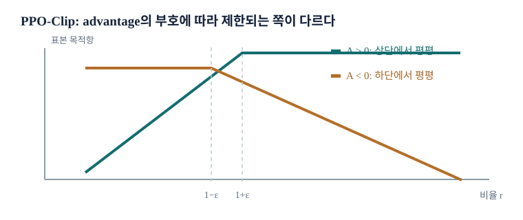

GAE와 PPO
Actor–Critic은 가치 추정으로 정책을 자주 갱신하지만 두 문제가 남는다. 짧은 TD 목표는 critic 오류에 민감하고, 현재 정책의 rollout을 한 번 쓰고 버리면 데이터가 비싸다. GAE는 advantage 추정의 길이를 조절하고, PPO는 수집한 batch에서 여러 번 갱신할 때 정책 변화가 지나치게 커지는 일을 완화한다.
PPO가 해결하려는 문제
PPO는 정책을 여러 번 갱신하면서도 한 번에 지나치게 크게 바뀌지 않도록 하는 방법이다.
두 개선 방향
Actor–Critic을 복습한 뒤, advantage 추정과 데이터 재사용이라는 두 문제를 순서대로 다룬다.
정책경사 가중치의 계보
전체 반환, reward-to-go, \(Q^\pi(s,a)\), advantage는 모두 점수 함수 \(\nabla_\theta\log\pi_\theta(a\mid s)\)에 곱할 성과 신호다. Advantage는 같은 상태에서 평균적인 가치 \(V^\pi(s)\)를 \(Q^\pi(s,a)\)에서 뺀 값이다. 각각 과거 보상의 잡음과 상태 난도의 영향을 다르게 제거한다.
실제 PPO에서는 \(A^\pi\)를 정확히 알 수 없으므로 가치망과 관측 보상으로 \(\widehat A_t\)를 만든다. 정책 목적함수의 공식이 정확해도 advantage가 심하게 잘못되면 갱신 방향이 틀릴 수 있다.
예를 들어 같은 상태의 보통 반환이 20인데 한 행동 뒤의 추정 반환이 15라면, 보상이 양수라도 advantage는 -5다. PPO는 그 행동의 확률을 낮추려 한다. 보상의 부호와 advantage의 부호를 동일하게 생각하면 clipping을 해석할 때 특히 혼동하기 쉽다.
REINFORCE가 기다리는 것
REINFORCE의 기본형은 끝난 궤적의 전체 보상으로 정책을 업데이트한다. 장기 과업에서 한 episode가 길고 보상이 마지막에만 있으면 갱신까지 많은 환경 단계가 필요하다. 가치함수가 없으므로 단순하고 설명하기 좋지만 표본 분산이 클 수 있다.
PPO의 개선을 이해할 때 REINFORCE를 단순히 “옛 알고리즘”으로 보면 안 된다. 어떤 편향을 추가해서 데이터 사용을 줄였는지 비교하는 기준선이다.
가치망의 근사 오류 없이 실제 반환을 쓰는 REINFORCE는 뒤에서 도입할 부트스트랩 방법의 기준점이다. 두 방법을 비교할 때에는 같은 환경 단계에서의 평가 반환과 추정량의 분산을 함께 본다.
Actor–Critic의 한 단계
Actor–Critic은 상태가치나 행동가치를 학습해 완전한 episode를 기다리지 않고 미래를 추정한다. actor는 \(\widehat A_t\)의 부호와 크기를 이용해 정책 로그확률을 갱신한다. \(\widehat A_t>0\)이면 관측 행동의 확률을 높이고, 음수면 낮춘다.
critic의 학습 목표가 \(r_t+\gamma V_\phi(s_{t+1})\)처럼 자기 추정에 의존하면 갱신이 빨라지는 대신 편향이 생긴다. 다음 단계는 여러 단계의 실제 보상과 끝의 가치 추정을 섞어 이 절충을 조절한다.
현재 가치 추정이 \(V(s_t)=4\), 다음 상태 추정이 \(V(s_{t+1})=6\), 보상이 1, \(\gamma=0.9\)라면 한 단계 TD 잔차는 \(\delta_t=1+0.9\cdot6-4=2.4\)다. 이 값은 “현재 행동 뒤의 결과가 가치망의 이전 전망보다 얼마나 좋았는가”를 나타낸다. 뒤의 GAE는 이런 잔차를 여러 시점에서 합친다.
자주 갱신할 수 있다는 뜻
한 episode가 1000단계인데 actor–critic이 10단계마다 가치 추정으로 갱신할 수 있다면 같은 경험에서 훨씬 많은 갱신 기회를 얻는다. 하지만 10단계 뒤의 나머지 결과는 critic에 의존한다. 업데이트 수 증가와 실제 성능 개선은 별개다.
표본 효율은 목표 점수에 도달하는 데 필요한 환경 단계 수로 평가한다. critic의 추정 오차가 크면 잦은 갱신이 오히려 학습을 불안정하게 할 수 있다.
업데이트를 자주 한다는 말은 같은 데이터를 무한히 써도 된다는 뜻이 아니다. 10단계마다 새 표본을 모은다면 데이터는 계속 현재 정책에서 나오지만, 한 10단계 batch만 계속 재사용하면 정책과 수집 분포의 차이가 커진다. 갱신 빈도와 한 batch의 재사용 횟수를 구분해야 한다.
남은 두 약점
짧은 반환 추정은 분산을 낮추지만 가치망이 틀린 만큼 편향될 수 있다. 또 이미 모은 batch에서 actor를 여러 번 갱신하면 새 정책과 수집 정책의 간격이 벌어진다.
GAE는 미래를 몇 단계 실제 보상으로 추적할지, PPO clipping은 그 추정을 이용해 정책 확률을 얼마나 바꿀지 조절한다. 다음 식들에서는 \(\lambda\)가 반환의 길이, \(\epsilon\)이 확률비의 허용 폭을 정한다.
$n$단계 반환
\(r_{t+l}\)은 시점 \(t+l\)의 보상, \(\gamma\)는 한 단계 할인율, \(n\)은 실제로 관측해 합칠 보상의 개수다. \(V_\phi(s)\)는 파라미터 \(\phi\)로 학습한 상태가치 추정치다. 모자 쓴 \(\widehat Q_t^{(n)}\)과 \(\widehat A_t^{(n)}\)은 각각 시점 \(t\)의 \(n\)단계 행동가치와 advantage 추정치를 뜻한다.
\(n=1\)은 빠르지만 가치망을 많이 믿고, \(n\)이 episode 끝까지 가면 실제 반환을 많이 반영한다. 끝 상태가 진짜 종료라면 마지막 부트스트랩 항은 0이다. 어떤 \(n\)이 좋은지는 과업의 보상 지연과 가치망의 정확도에 따라 달라진다.
\(n=2\)라면 \(\widehat Q_t^{(2)}=r_t+\gamma r_{t+1}+\gamma^2V(s_{t+2})\)다. 예를 들어 보상 1, 2와 \(V(s_{t+2})=5\), \(\gamma=0.9\)를 쓰면 \(1+1.8+4.05=6.85\)다. 한 단계 목표보다 실제로 관측한 보상 하나를 더 쓰지만, 끝의 가치 추정 오차는 여전히 남는다.
rollout이 시간 제한으로 잘리면 마지막 가치가 항상 0일까?
진짜 종료 상태라면 뒤에 받을 보상이 없으므로 0이다. 단순히 수집 시간을 채워 잘렸고 과업은 계속된다면 다음 상태의 가치를 bootstrap해야 한다. 두 종료 원인을 같은 마스크로 처리하면 가치와 GAE가 왜곡된다.
GAE의 가중 평균과 재귀
GAE의 \(\lambda\in[0,1]\)는 긴 반환에 줄 가중치를 정한다. \(T\)를 현재 rollout이 끝나는 시점, \(\delta_t=r_t+\gamma V_\phi(s_{t+1})-V_\phi(s_t)\)를 한 단계 TD 잔차라 두자. 이 잔차를 뒤에서부터 합치면 여러 길이의 advantage를 평균한 값과 같다. 아래 재귀식의 \(\widehat A_{t+1}\)도 같은 GAE 추정치이며 끝에서는 \(\widehat A_T=0\)으로 놓는다.
\(\lambda=0\)이면 한 단계 TD advantage이고, \(\lambda=1\)에 가까우면 긴 실제 반환을 많이 반영한다. \(\lambda\)를 키울수록 가치 근사에 따른 짧은 지평 편향은 줄 수 있지만 표본 분산은 커질 수 있다. 종료와 시간 제한 처리에 따라 경계항이 달라진다. GAE 논문
GAE를 단순한 평균으로 보면 왜 부족한가?
각 길이의 advantage를 동일 가중으로 평균하지 않는다. \(\lambda\)가 긴 길이의 비중을 지수적으로 조절하고 \(\gamma\)가 보상의 시간 가중을 함께 정한다. 구현은 TD 잔차를 뒤에서 앞으로 재귀적으로 합치는 편이 정확하다.
두 단계만 있는 예에서 \(\delta_t=2\), \(\delta_{t+1}=-1\), \(\gamma=0.9\), \(\lambda=0.5\)라면 \(\widehat A_t=2+0.9\cdot0.5\cdot(-1)=1.55\)다. 한 단계 TD만 쓰면 2이고, 더 긴 결과를 반영하면 뒤의 나쁜 결과가 현재 행동의 평가를 낮춘다. \(\lambda\)는 먼 TD 잔차의 반영 정도를 조절한다.
왜 여러 길이의 반환이 TD 잔차 합으로 바뀌는지 직접 전개해 보자. \(\delta_{t+j}=r_{t+j}+\gamma V(s_{t+j+1})-V(s_{t+j})\)를 \(\sum_{j=0}^{n-1}\gamma^j\delta_{t+j}\)에 대입하면 가운데의 \(+\gamma^{j+1}V(s_{t+j+1})\)와 다음 항의 \(-\gamma^{j+1}V(s_{t+j+1})\)가 차례로 상쇄된다. 처음의 \(-V(s_t)\)와 마지막의 \(+\gamma^nV(s_{t+n})\)만 남으므로 이 합은 정확히 \(\widehat Q_t^{(n)}-V(s_t)=\widehat A_t^{(n)}\)다. GAE는 길이가 다른 이 합들에 \(\lambda\) 가중치를 주므로, 오래된 잔차일수록 \((\gamma\lambda)^j\)가 붙는다.
남은 길이를 \(H=T-t\)라고 놓고, 길이 \(n<H\)의 가중치를 \(w_n=(1-\lambda)\lambda^{n-1}\), 마지막 길이의 가중치를 \(w_H=\lambda^{H-1}\)로 정하자. 실제로 이 가중치의 합은 \((1-\lambda)\sum_{n=0}^{H-2}\lambda^n+\lambda^{H-1}=1\)이다. 따라서
내부 합 \(\sum_{n=j+1}^Hw_n=\lambda^j\)는 \(j\)번째 잔차를 포함하는 모든 길이의 총가중치다. 시간 제한으로 rollout을 잘랐다면 마지막 \(\widehat A_t^{(H)}\)에는 \(V(s_T)\) 부트스트랩이 남는다.
\(\lambda=1\)이면 언제 Monte Carlo advantage와 같아지나?
수집 구간이 진짜 종료까지 이어지고 종료 상태의 \(V\)를 0으로 두면 잔차 합의 중간 가치가 모두 지워져 \(G_t-V(s_t)\)가 된다. 단순 시간 제한에서 수집을 멈췄다면 마지막 \(V(s_T)\)를 남겨 부트스트랩하므로 순수 Monte Carlo 반환과 같지 않다.
Advantage 추정과 데이터 재사용은 별개
앞에서는 \(n\)단계 반환과 GAE로 advantage 추정을 개선했다. 남은 문제는 같은 데이터로 정책을 여러 번 갱신하는 것이다.
왜 현재 정책 데이터가 필요한가
기본 정책경사의 기대값은 \(\tau\sim p_\theta\)에 대한 것이다. 파라미터를 \(\theta\)에서 \(\theta'\)로 바꾸면 원하는 기울기는 \(E_{\tau\sim p_{\theta'}}\)가 되지만 손에 든 batch는 여전히 \(p_\theta\)에서 왔다.
정책 변화가 작으면 근사적으로 쓸 수 있어도 여러 업데이트를 반복하면 차이가 커진다. 단순히 같은 로그확률 손실을 여러 번 줄이는 것은 원래 유도의 표본 가정을 벗어난다.
예를 들어 이전 정책이 어떤 행동을 0.2 확률로 골랐는데 새 정책은 0.8 확률로 고른다면, 이전 batch에는 그 행동의 결과가 새 정책에서 필요한 빈도보다 훨씬 적다. 기존 한 표본을 네 배로 가중해 평균을 맞추려 할 수 있지만, 실제 표본 하나가 우연한 성공이었다면 그 우연도 네 배가 된다. 분포 보정과 분산 문제는 함께 생긴다.
중요도 샘플링의 기본식
원하는 표본분포의 밀도를 \(p(x)\), 실제 자료를 뽑은 분포의 밀도를 \(q(x)\), 평균낼 함수를 \(f(x)\)라 두자. \(E_{x\sim p}[f(x)]\)는 \(p\)에서 뽑았을 때의 함수 평균이다. 적분 안에서 \(q(x)\)를 곱하고 나누면 \(q\) 자료만으로 같은 기대값을 표현할 수 있다.
이 식이 성립하려면 \(p(x)>0\)인 곳에서 \(q(x)>0\)이어야 하고, 해당 기대값이 존재해야 한다. 비율 \(w(x)=p(x)/q(x)\)를 중요도 가중치라 한다. 이전 정책이 전혀 선택하지 않은 행동의 결과는 데이터 재가중만으로 알 수 없으며, 작은 \(q(x)\) 때문에 \(w(x)\)가 크면 추정량의 분산도 커진다.
두 값의 장난감 예로 \(q(a_1)=0.25\), \(p(a_1)=0.5\)라면 \(a_1\) 표본의 비율은 2다. 반대로 \(q(a_2)=0.75\), \(p(a_2)=0.5\)이면 비율은 \(2/3\)이다. \(q\)에서 얻은 표본을 이 비율로 가중하면 \(p\)가 더 자주 낼 행동은 키우고 덜 낼 행동은 낮춘다. \(q(a_1)=0\)이면 비율 자체가 정의되지 않으므로 없는 자료를 가중치로 만들어 낼 수는 없다.
궤적 비율에서 행동 비율로
길이 \(T\)의 궤적 \(\tau=(s_0,a_0,\ldots,s_T)\)를 생각하자. \(\pi_{\mathrm{old}}\)는 이 궤적을 수집한 정책, \(\pi_\theta\)는 파라미터 \(\theta\)로 갱신하는 정책이다. \(p_{\mathrm{old}}(\tau)\)와 \(p_\theta(\tau)\)는 각각 두 정책 아래 같은 궤적의 확률이다. 초기 상태분포와 환경 전이확률이 같고 분모가 양수인 궤적에서는 그 항들이 비율에서 상쇄된다.
한 시점의 행동 확률비를 \(\rho_t(\theta)=\pi_\theta(a_t\mid s_t)/\pi_{\mathrm{old}}(a_t\mid s_t)\)라고 정의하자. 전체 궤적 비율은 \(\prod_t\rho_t(\theta)\)다. 긴 궤적에서는 이 곱의 분산이 커지므로 PPO는 시점별 \(\rho_t\)를 surrogate 목적에 쓴다. 보상 \(r_t\)와 확률비 \(\rho_t\)를 구별하자.
각 단계의 비율이 1.1이어도 길이 100의 궤적 비율은 \(1.1^{100}\approx13780\)이다. PPO의 한 단계 비율은 전체 궤적 기대값을 정확히 보정하는 가중치가 아니라, 정책을 점진적으로 갱신하기 위한 surrogate의 요소다.
여러 갱신에서 이전 정책 고정하기
rollout 직후 행동마다 수집 정책의 로그확률 \(\log\pi_{\mathrm{old}}(a_t\mid s_t)\)를 저장하고 갱신 중 고정한다. 시점 \(t\)에 수집한 행동 \(a_t\)의 새 정책 확률질량 또는 밀도를 옛 정책의 값으로 나눈 비를 \(\rho_t(\theta)=\pi_\theta(a_t\mid s_t)/\pi_{\mathrm{old}}(a_t\mid s_t)\)라 정의한다. 분모가 양수인 표본에서 현재 정책의 로그확률을 구해 \(\rho_t(\theta)=\exp\{\log\pi_\theta(a_t\mid s_t)-\log\pi_{\mathrm{old}}(a_t\mid s_t)\}\)로 계산한다.
같은 batch를 여러 epoch 학습하려면 분모를 업데이트마다 새로 계산하면 안 된다. 그러면 “수집 당시 정책과 지금 정책”의 비가 아니게 된다. 중요도 비율은 계산만으로 안정성을 보장하지 않아 추가적인 갱신 제어가 필요하다.
저장된 값이 \(\log\pi_{\rm old}(a_t\mid s_t)=-1.2\)이고 현재 값이 \(-1.0\)이라면 비율은 \(\exp(0.2)\approx1.22\)다. 로그확률을 빼고 지수화하면 매우 작은 확률도 직접 나누는 것보다 계산이 안정적이다. 분모를 현재 정책으로 매번 다시 계산하면 비율이 늘 1 근처가 되어 clipping의 의미가 사라진다.
큰 중요도 비율과 정책 변화
좋은 결과를 낸 행동의 확률을 계속 높이면 \(\rho_t\)가 커진다. 한 batch를 반복 학습할수록 몇 표본의 큰 비율이 손실과 기울기를 지배하고, 그 표본을 낳은 상태 분포와 새 정책의 상태 분포도 멀어진다.
파라미터 거리 \(\|\theta-\theta_{\mathrm{old}}\|\)는 정책 거리의 좋은 대리변수가 아닐 수 있다. 신경망에서는 작은 파라미터 이동도 출력 확률을 크게 바꿀 수 있기 때문이다. TRPO는 정책 간 KL 발산을 제한하는 신뢰영역 관점을 쓰고, PPO는 훨씬 간단한 목적함수의 clipping으로 큰 변화를 억제한다. PPO clipping은 KL 제약을 엄밀하게 보장하지 않는다. TRPO, PPO
실험에서는 평균 KL과 clip fraction(비율이 clip 구간 밖에 놓인 표본의 비율)을 함께 관찰한다. PPO의 clipping이 목적함수에 주는 제어와 실제 정책 변화의 크기를 나란히 확인할 수 있다.
PPO를 구성하는 네 조각
PPO-Clip은 actor–critic의 가치 추정, GAE advantage, 행동 확률비, 비율 clipping을 결합한다. 수집한 batch의 표본 수를 \(N\), 각 표본에서 이미 계산해 고정한 advantage를 \(\widehat A_t\)라 하자. 출발점인 surrogate \(\widehat L(\theta)=N^{-1}\sum_t\rho_t(\theta)\widehat A_t\)는 좋은 결과의 행동 확률을 올리고 나쁜 결과의 확률을 내린다. 같은 batch를 오래 최적화하면 비율이 과하게 변한다.
수집 당시의 로그확률과 \(\widehat A_t\)는 여러 actor 갱신 동안 고정한다. 구현에서는 advantage를 detach해 actor 손실의 경사가 critic으로 흐르지 않게 하고, critic은 별도의 가치 손실로 학습한다. PPO 원논문
Advantage 부호에 따른 clipping 직관
수집 정책 대비 새 정책이 같은 행동에 주는 확률의 비율을 \(\rho_t\)라 하고, 그 행동의 advantage 추정치를 \(\widehat A_t\)라 하자. \(\widehat A_t>0\)이면 행동 확률을 높이는 이득을 \(1+\epsilon\)에서, \(\widehat A_t<0\)이면 낮추는 이득을 \(1-\epsilon\)에서 제한한다. 여기서 \(\epsilon\)은 허용 비율 변화의 폭이다. 다음 슬라이드가 이 두 경우를 하나의 목적함수로 합친다.
하나의 PPO-Clip 목적함수로 합치기
수집 당시 정책을 \(\pi_{\mathrm{old}}\), 현재 정책을 \(\pi_\theta\)라고 하자. \(\rho_t(\theta)=\pi_\theta(a_t\mid s_t)/\pi_{\mathrm{old}}(a_t\mid s_t)\)는 수집한 행동의 확률비, \(\widehat A_t\)는 그 행동의 고정된 advantage 추정치, \(\epsilon\in(0,1)\)은 허용 비율의 폭이다. \(\mathcal B\)는 수집 rollout의 시점 인덱스들이며, \(E_{t\in\mathcal B}\)는 그 표본 평균이다. \(\operatorname{clip}(x,l,u)\)는 \(x\)를 구간 \([l,u]\)의 가까운 끝점으로 자르는 함수다. PPO가 최대화하는 actor 목적은
양의 advantage에서는 비율 상단, 음의 advantage에서는 비율 하단의 추가 이득이 잘린다. clipping 범위를 벗어난 모든 표본의 기울기가 0이 되는 것은 아니다. 예컨대 양의 advantage인데 비율이 지나치게 작으면, 목적은 확률을 회복시키도록 여전히 기울기를 준다. min은 과도하게 유리한 변화만 제한하는 보수적 surrogate다. PPO 원논문
비율을 자르면 새 정책이 반드시 가까운가?
아니다. 표본에서 목적의 유리한 방향을 자르는 장치다. 관측하지 않은 상태에서 정책이 크게 변할 수도 있고, 실제 KL이 커질 수도 있다. 실무에서는 평균 KL을 모니터링하거나 조기 중단을 더한다.
한 표본의 advantage를 \(A\), 확률비를 \(\rho\)라고 줄여 쓰자. \(f(\rho,A)=\min\{\rho A,\operatorname{clip}(\rho,1-\epsilon,1+\epsilon)A\}\)를 부호별로 풀면
\(A<0\)에서 음수를 곱하면 부등호 방향이 뒤집혀 \(\max(\rho,1-\epsilon)\)이 나온다. \(A=-2\), \(\rho=1.3\)처럼 나쁜 행동의 확률이 증가한 경우에는 목적이 \(-2.6\)으로 내려가므로 이를 되돌릴 기울기가 남는다.

PPO 학습 반복의 순서
현재 정책으로 rollout을 수집하고 행동 로그확률, 보상, 상태, 종료 여부를 저장한다. critic으로 가치와 GAE를 계산한 다음 수집 정책을 \(\pi_{\mathrm{old}}\)로 고정한다. 동일 batch를 여러 epoch와 minibatch에 나누어 \(L^{\mathrm{CLIP}}\)를 최대화하고, 가치 손실과 정책 엔트로피 보너스를 함께 학습한다. 이후 새 정책으로 다시 rollout을 수집한다.
엔트로피 \(H(\pi(\cdot\mid s))=-\sum_a\pi(a\mid s)\log\pi(a\mid s)\)는 정책이 너무 일찍 한 행동으로 수렴하지 않도록 한다. 연속 행동에서는 해당 밀도의 미분 엔트로피를 쓴다. 가치 손실·엔트로피 계수의 스케일은 보상 스케일과 함께 점검해야 한다. 코드에서 분모의 old log probability를 매 epoch 재계산하면 알고리즘이 달라진다.
Rollout을 시간 제한으로 끊은 경우에는 진짜 종료인지 수집만 중단했는지 표시해야 한다. 전자는 이후 가치가 0이고, 후자는 마지막 상태의 가치로 GAE를 부트스트랩한다. 이 마스크를 잘못 쓰면 actor의 advantage와 critic의 목표가 동시에 바뀐다.
PPO가 널리 쓰이는 이유와 한계
같은 clipping 식이 이산 행동과 연속 행동의 정책 로그확률에 적용되고, 여러 환경을 병렬 실행해 rollout을 모으기 쉽다. 구현의 핵심도 복잡한 제약 최적화 대신 보통의 경사 최적화로 표현된다. 그래서 로봇 제어와 언어모델 학습을 포함한 여러 맥락에서 출발점으로 쓰인다.
rollout 길이, minibatch 크기, 업데이트 epoch 수, 학습률, \(\epsilon\), GAE \(\lambda\), entropy 계수, 보상·advantage 정규화가 성능을 좌우한다. 재현할 때는 평가 환경을 학습 환경과 분리하고 여러 seed의 평균과 분산을 함께 보고한다.
실험에서 episode 반환만 보면 정책이 왜 불안정한지 찾기 어렵다. 평균 KL이 계속 커지면 갱신 폭을, clip fraction이 지나치게 높으면 많은 표본이 더 이상 유리한 기울기를 주지 못하는지를, value loss가 높으면 advantage의 질을 확인한다. 정책 엔트로피가 갑자기 0에 가까워지면 탐색이 너무 일찍 줄었는지도 살핀다.
접촉이 많은 로봇 조립
Factory는 접촉이 많은 로봇 조립을 시뮬레이션에서 학습·평가한 사례다. 접촉의 정확한 물리 계산과 병렬 수집이 중요하다.
SAPG와 병렬 학습
SAPG는 병렬 정책경사 학습의 확장 사례다. 여기서는 PPO 계열 방법이 많은 시뮬레이션 경험을 모아 로봇 정책을 학습할 수 있다는 점을 보여 준다.
사족 보행의 실제 로봇 시연
네 발 로봇의 실제 보행 시연이다. 시뮬레이션에서 학습한 정책을 실제 로봇에서 실행할 때의 안정성을 보여 준다.
보행을 넘어서는 전신 제어
보행 외 전신 제어 동작의 예시다. 복잡한 몸체의 여러 관절을 동시에 조절해야 한다.
조작 정책 시연을 읽는 법
로봇 조작 정책의 실행 영상이다. 화면은 결과를 보여 주며 구체적인 학습 알고리즘은 별도로 확인해야 한다.
사람 피드백과 언어모델
RLHF에서는 사람의 선호로 만든 보상모델을 사용해 언어모델 정책을 개선한다. 응답 전체에 대한 선호가 학습 신호가 된다는 사례다.
왜 다음은 off-policy인가
PPO는 한 rollout batch를 몇 번 재사용하지만, 새 정책이 수집 정책에서 너무 멀어지면 자료를 버리고 다시 모아야 한다. 서로 다른 과거 정책의 방대한 replay buffer를 자유롭게 활용하는 방식과는 다르므로 보통 on-policy 계열로 분류한다.
Q-learning과 DQN은 행동 정책과 다른 greedy 정책의 가치를 학습할 수 있다. DDPG·TD3·SAC는 연속 행동에서 replay를 활용한다. 다음 장의 핵심 질문은 새 정책의 행동을 실험하지 않은 전이 자료만으로 어떻게 평가하고 개선할 것인가다.
한 전이 \((s,a,r,s')\)는 과거 행동 정책이 수집했어도, 그 결과 \(r,s'\)는 환경의 같은 전이 법칙에서 나왔다. Off-policy 방법은 이 자료를 이용해 현재와 다른 목표 정책의 가치를 추정한다. 다만 데이터가 없는 행동의 결과를 자동으로 아는 것은 아니며, Q함수의 일반화와 탐색이 중요하다.